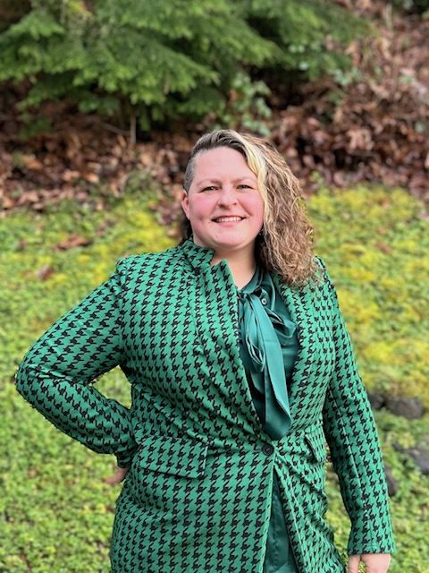

My passions are writing, creating content, and training dogs. My favorite projects involve forming content into an easy-to-understand resource with useful design elements. One of the more interesting projects I worked on creating Standard Operating Procedure websites. My team did this across various departments within an organization. Information had previously been scattered or isolated by subject matter experts.
I was led to this line of work, in part through my education. I studied biology and writing during my undergrad which gave me skills to effectively communicate while also understanding logical reasoning through the scientific method. This eventually led me to creating various mediums using instructional design. I am now pursuing a Master’s in Learning Technologies and Design with an estimated graduation in 2026.
My hobby is dog sports--agility taking up most of my interest. Learning how to work and communicate with dogs helps me be better at finding best practices for communicating with people.
I can accept failure, everyone fails at something. But I can't accept not trying. - Michael Jordan, Resume